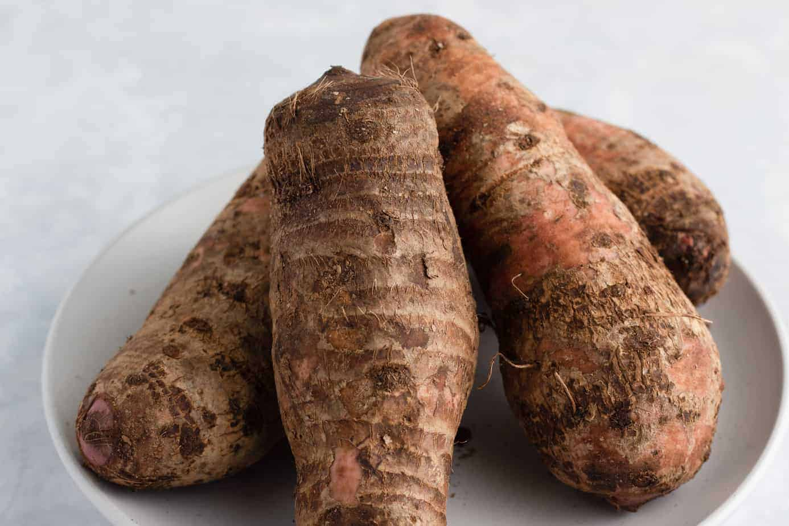
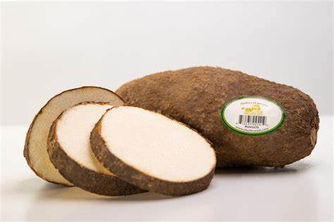
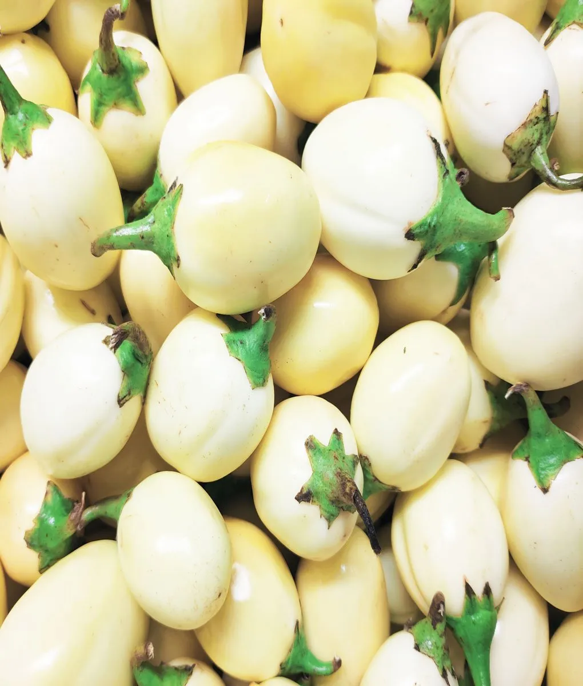
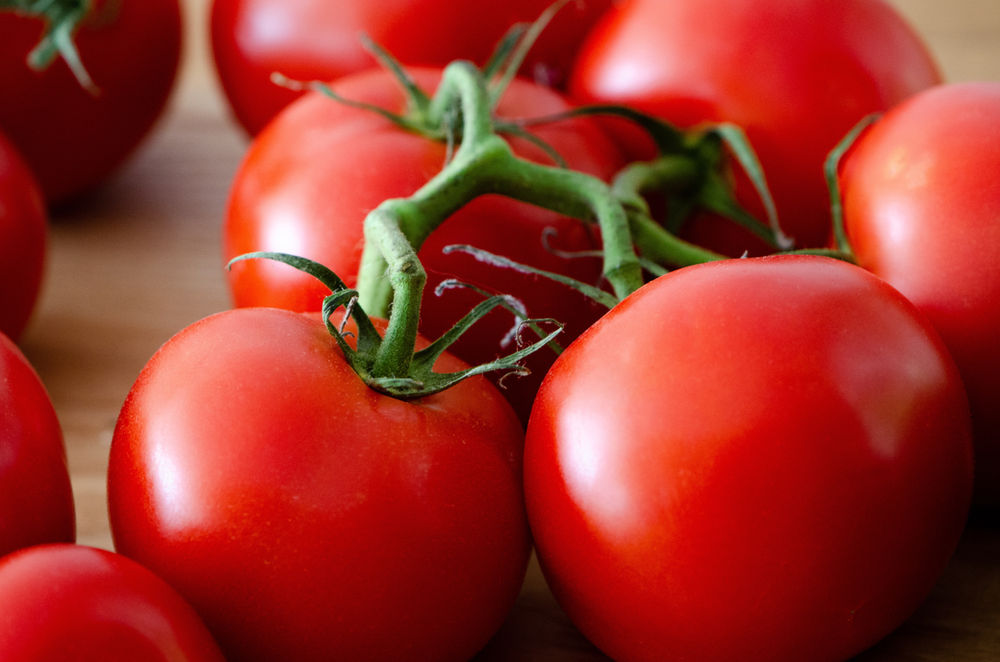
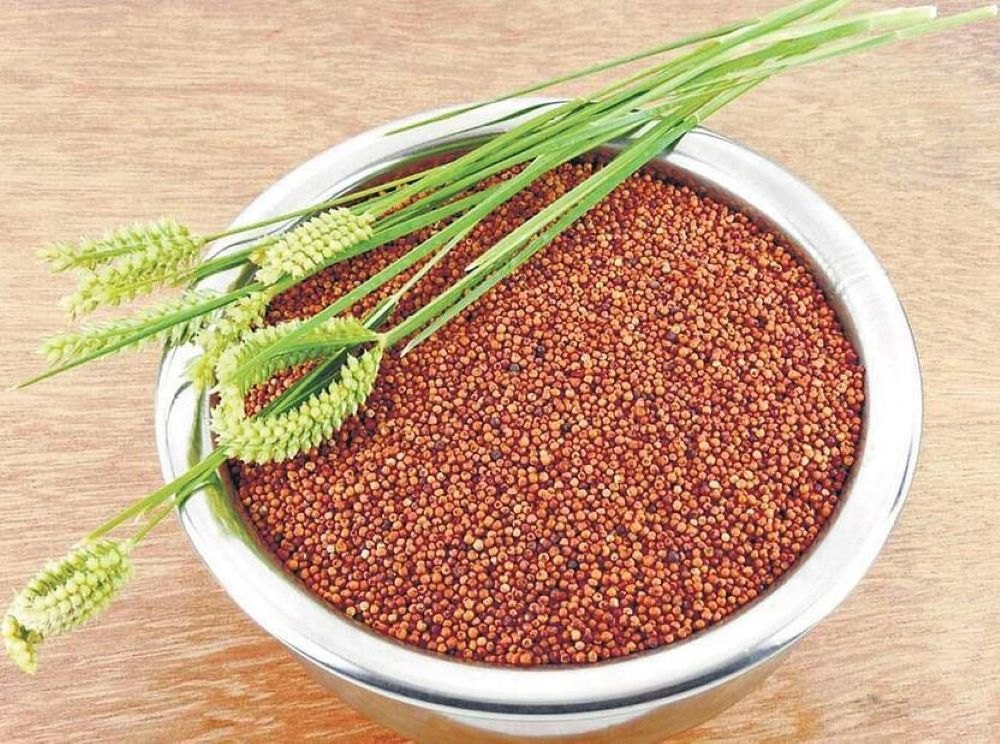

African cocoyam
The health benefits of eating cocoyam includes improving the chances of dietary success, supporting digestive health,
a good source of carbohydrate, improving metabolic efficiency and nutrient absorption, strengthening immune function
and supporting blood health.Cocoyam, which is the thick, tuber stalk of the Cocoyam plant is an extremely important
part of global cuisines and diets, as it has been for thousands of years. The health benefits of eating cocoyam includes
providing strength for good aerobic exercise, improving heart and bone health, improving enzyme function and fighting anemia.
African plantain
A plantain to the untrained eye could easily be mistaken for a banana. In fact, it belongs to Musaceae,
the banana family of plants, and it's closely related to the common banana. Believed to be native to Southeast Asia,
plantains are grown in tropical regions around the world and in a variety of cuisines. Unripe plantains are green
to yellow, difficult to peel, and the fruit is hard with a starchy flavor—this is the perfect stage for boiling and frying them.
When fully ripe, plantains are black, with a flavor that some people describe as similar to a banana but not as sweet.
Most people prefer them cooked even at this stage.

African yam
Yam is the common name for some plant species in the genus Dioscorea (family Dioscoreaceae) that form edible tubers
(some other species in the genus being toxic).
Yams are perennial herbaceous vines native to Africa, Asia, and the Americas and cultivated for the consumption
of their starchy tubers in many temperate and tropical regions. The tubers themselves, also called "yams", come
in a variety of forms owing to numerous cultivars and related species.

African garden eggs
African garden eggs are a nutritious fruit from the nightshade family and are widely consumed in African
countries like Nigeria, Ghana, and Benin Republic. The botanical name of garden egg is Solanum melongena.
Although it is often referred to as a vegetable, it is technically a fruit, because they grow from a flowering
plant and contain seeds. Garden eggs can be used to make a variety of dishes, such as garden egg sauce, which
requires garden eggs, onions, tomatoes, red bell pepper, scotch bonnet pepper, garlic, ginger, and red palm oil.

Africa millet
Tomatoes are a significant source of umami flavor.They are consumed in diverse ways
raw or cooked, and in many dishes, sauces, salads, and drinks. While tomatoes are
fruits—botanically classified as berries—they are commonly used culinarily as a
vegetable ingredient or side dish.
Numerous varieties of the tomato plant are widely grown in temperate climates
across the world, with greenhouses allowing for the production of tomatoes
throughout all seasons of the year.

africa millet
Millets are a highly varied group of small-seeded grasses,
widely grown around the world as cereal crops or grains for
fodder and human food.
Millets are important crops in the semiarid tropics of Asia
and Africa (especially in Mali, Nigeria, and Niger), with 97%
of production in developing countries.
The crop is favored due to its productivity and short growing
season under dry, high-temperature conditions.
The term millet is sometimes understood to comprise the widely
cultivated sorghum. Apart from that, pearl millet is the most
commonly cultivated of the millets. Pearl millet and sorghum are
important crops in Africa. Finger millet, proso millet, and foxtai
l millet are also important crop species.